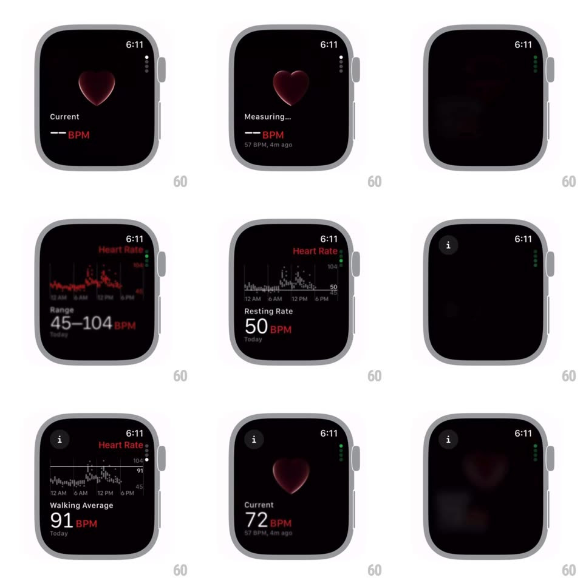

Media
Frame-by-frame

Rebuild this interaction 1:1: the watchOS Heart Rate app's section scroll - vertical paging between metric screens (live Measuring..., day graph with Range 45-104 BPM, Resting Rate 50 BPM, Walking Average 91 BPM) where each transition blurs, scales, and fades the outgoing screen.

Rebuild this interaction 1:1: the watchOS Heart Rate app's section scroll - vertical paging between metric screens (live Measuring..., day graph with Range 45-104 BPM, Resting Rate 50 BPM, Walking Average 91 BPM) where each transition blurs, scales, and fades the outgoing screen.
## Integration
Integration: stack-agnostic spec - springs given as stiffness/damping, timed motions as duration + curve; map every value to your framework and animation library of choice.
## Scene
Black watch screens: measuring view (3D red heart, "Measuring...", "-- BPM", "57 BPM, 4m ago" footnote); day graph (red heart-rate line over time grid, "Range 45-104 BPM Today"); Resting Rate (white graph, "50 BPM"); Walking Average ("91 BPM"). Page dots at the right edge; an info button top-left on metric pages.
## Motion spec
Pattern: blur-scale-fade vertical pager.
- Crown/drag between sections: the outgoing screen blurs (radius 0 -> 12px), scales down to 0.92, and fades (250ms) while the incoming screen un-blurs, scales 1.05 -> 1, and fades in - a depth swap, not a slide.
- Page dots light in sync with the transition; the current dot is full white.
- The measuring heart pulses continuously (scale 1 -> 1.08, ~0.9s, matched to ~65 BPM) with a soft inner glow; when a reading lands, "-- BPM" crossfades to the live value (200ms) and the graph pages' lines draw in (trim, 700ms).
- The info button fades in only on metric pages; the measuring page hides it.
## Calibration
- Blur is the dominant cue - the scale and fade support it; never slide these pages.
- Graph axes (12 AM / 6 AM / 12 PM / 6 PM, BPM bounds) stay consistent across Range/Resting/Walking so only the line and value change.
## Reduced motion
Screens crossfade without blur or scale.
## Don't miss
- The heart is glossy 3D, not a flat glyph.
- Values are white with red "BPM" units - the red unit treatment is consistent across pages.